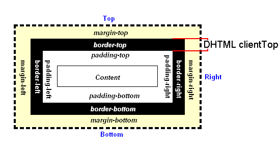

- css
- IE
- ios
- command
- git
- 要素取得(js)
- event(js)
- 順番処理、反復処理(js)
- W, H, 位置(js)
-
css
- background 一括指定
-
ex:
background: center / 50% no-repeat url("../../media/examples/firefox-logo.svg"),red 10% 30%/40% 60% no-repeat url("../../media/examples/lizard.png");
-
●順番任意だが、background-sizeが指定するなら、必ずbackground-positionの直後に"「background-position」 / 「background-szie」"の順番で入力すること
-
●例：「center / 50%」⇒「background-position: center center; background-size: 50% 50%;」
「10% 30%/40% 60%」⇒「background-position-x: 10%;background-position-y: 30%; background-size: 40% 60%;」 -
●exのように、複数背景を指定することが可能だ。
ただ、最後の一枚だけにbackground-colorを指定できる
- Hide scroll bar, but while still being able to scroll
-
ex:
.scrollWithoutScrollbar { width: 100%; white-space: nowrap; overflow-x: scroll; -ms-overflow-style: none; /* Internet Explorer 10+ */ scrollbar-width: none; /* Firefox */ } .scrollWithoutScrollbar::-webkit-scrollbar { display: none; /* Safari and Chrome */ }
-
or
#parent{ width: 100%; height: 100%; overflow: hidden; } #child{ width: 100%; height: 100%; overflow-y: scroll; padding-right: 17px; /* Increase/decrease this value for cross-browser compatibility */ box-sizing: content-box; /* So the width will be 100% + 17px */ }
-
IE
- min-heightが効かない対策
-
ex:
<div class="target">
.target{ display: flex; min-height: 100%; } - IEはdisplay:flexの要素にmin-heightが無効、ただ、flexの子要素にはmin-heightが効く、そのためtargetの外にwarp要素を設けて認識されるようになる
- 例：
<div class="wrap">
<div class"target"></div>
</div>
.wrap{display: flex;}
-
ios
- Full screen 表示したい画像iosだとover scroll して、空白が見えてしまうに対する対策
-
ex:
target { position: fixed; width: 100%; height: 120vh; top: 0; left: 0; transform: translate(0, -10%); background: center/cover no-repeat; } - 縦幅をfull screen より多めに設定することで空白見えなくなる（transformではなくtop: -10%するには空白は見える）
-
command
- ファイル作成
- touch ファイル名.拡張子
- ファイルの中身を表示する
- cat ファイル名.拡張子
- ディレクトリを作成
- mkdir ディレクトリ名
- 「make directory」
- カレントディレクトリ
- 自分が今いるディレクトリ
- ディレクトリ間を移動(同階層、下階層)
- cd ディレクトリ名
- ルートディレクトリ
- /
- カレントディレクトリを確認
- pwd
- 「print working directory」
- ディレクトリの中身を表示
- ls
- 「list」
- 表示範囲:カレントディレクトリの直下だけ
- 親ディレクトリへの移動
- ●1つ親のディレクトリ
- ..
- cd ..
- ●ホームディレクトリ
- cd
- ファイル/ディレクトリごとの場所を移動
- mv 移動させたいファイル名/移動させたいディレクトリ名 移動先のディレクトリ名
- 「move」
- ファイル名/ディレクトリ名を変更
- mv 現在のファイル名/ディレクトリ名 新しいファイル名/ディレクトリ名
- ファイル/ディレクトリのコピー
- cp コピーするファイル名 新しいファイル名
- 「copy」
- cp -r コピーするディレクトリ名 新しいディレクトリ名
- ファイル/ディレクトリの削除
- rm 削除するファイル名
- 「remove」
- rm -r 削除するディレクトリ名
-
- 初期化-initialize
- git init
- 共有するファイルを追加
- git add ファイル名
- コミットする
- git commit -m "メッセージ"
- リモートを登録
- git remote add リモート名 URL
- リモートにファイルをアップロード/ダウンロードする
- git push リモート名 master
- git pull リモート名 master
- 変更したファイルを把握
- git status
- 変更内容を表示
- git diff
-
要素取得(js)
-
event(js)
- イベントハンドラー/イベントリスナーを定義する3つ方法
- 1.タグ内の属性として宣言する
- 2.要素オブジェクトのプロパティとして宣言する
- 3.addEventListener メソッドを使って宣言する
- beforeunload
- window.addEventListener('beforeunload', function(evt) { evt.preventDefault(); evt.returnValue = ''; });
-
順番処理、反復処理(js)
- forEach [配列]を順番で指定した関数で処理する
-
[配列].forEach();
var array1 = [2,3,4,5];
array1.forEach( function( v, i, a ){ });IE 対策Array.prototype.slice.call(arry1)
- v→要素の値
i→インデックス番号
a→元の配列
- for ループ処理
-
for(初期化式 var i = 0; ループ継続条件式 i < 9; 増減式 i++){ } - ●実行順番：初期化式→条件式（true）→増減式→条件式...
- for in {オブジェクト}を順番で処理する
-
for( 仮変数 var key in {オブジェクト} obj1 ){ }
var obj1 = { apple:150,orange:100,banana:120 };
for(var key in obj1){ console.log(key + obj1[key]); }
- for of (ES2015) [配列（列挙可能なオブジェクト）]を順番で処理する
-
for( 仮変数 var value of [列挙可能なオブジェクト] array1 ){ }
var array1 = [ 'apple', 'banana', 'orange' ];
for(var value in array1){ console.log(value); }
- switch
-
switch(式){ case 値1: break;(breakがないとそのまま下へ順番に実行する) case 値2: break; ... default:(省略できるが、書くことが推奨される) break; }
- while/do while
-
while(条件式 x < 10){ }do{ }while(条件式 x < 10); - while と do while の違い
while⇒前置判断（先に条件を判定し、あっていなければ一度も実行しない）
do while⇒後置判断（一回実行してから条件を判定する、つまり最低一回実行することが担保される）
-
W, H, 位置(js)
- clientHeight (js)
-
document.getElementsByClassName('ex')[0].clientHeight;
$(".ex").innerHeight();

- offsetHeight (js)
-
document.getElementsByClassName('ex')[0].offsetHeight;
$(".ex").outerHeight()

- scrollHeight (js)
-
document.getElementsByClassName('ex')[0].scrollHeight;
--The following equivalence returns true if an element is at the end of its scroll, false if it isn't.
--element.scrollHeight - element.scrollTop === element.clientHeight
*overflowの設定に関係なく、同じ数値が返る

- scrollTop (js)
-
document.getElementsByClassName('ex')[0].scrollTop;
window.pageYOffsetはwindowだけのスクロール量を返す
上へスクロールした分の数値
targetの先頭からtargetのtop枠まで（border-topを含む）

- clientTop (js)
-
document.getElementsByClassName('ex')[0].clientTop;
border-topの数値を返す

- offsetTop (js)
-
document.getElementsByClassName('ex')[0].offsetTop;
●自身から一番近い、スタイルシートのpositionプロパティが"static"ではない祖先要素に対する位置を返す
●該当する要素がない場合、body要素に対する位置を返す
●要素が非表示 (この要素または任意の祖先の style.display が "none")である場合、または要素自体の style.position が "fixed" に設定される場合、このプロパティは WebKit で null を返す
- getBoundingClientRect() (js)
-
document.getElementsByClassName('ex')[0].getBoundingClientRect().x/y/width/height
viewport(ブラウザ内表示範囲*アドレスバーとブラウザのスクロールバーを含まない)に対する位置を返す
- window.scrollY (js)/別名「window.pageYOffset」
-
文書が現在垂直方向にスクロールしているピクセル数を返します。
クロスブラウザー互換性のため、window.scrollY ではなく window.pageYOffset を使用します。(IE11)
使う例：（要素のpage先頭までの距離を求める）
window.pageYOffset + document.querySelector("xx").getBoundingClientRect().top
＝$('xx').offset().top;使う例：（target先頭までscroll）
$('html,body').animate({ scrollTop: window.pageYOffset + document.getElementById('XX').getBoundingClientRect().top }, 200, 'swing');